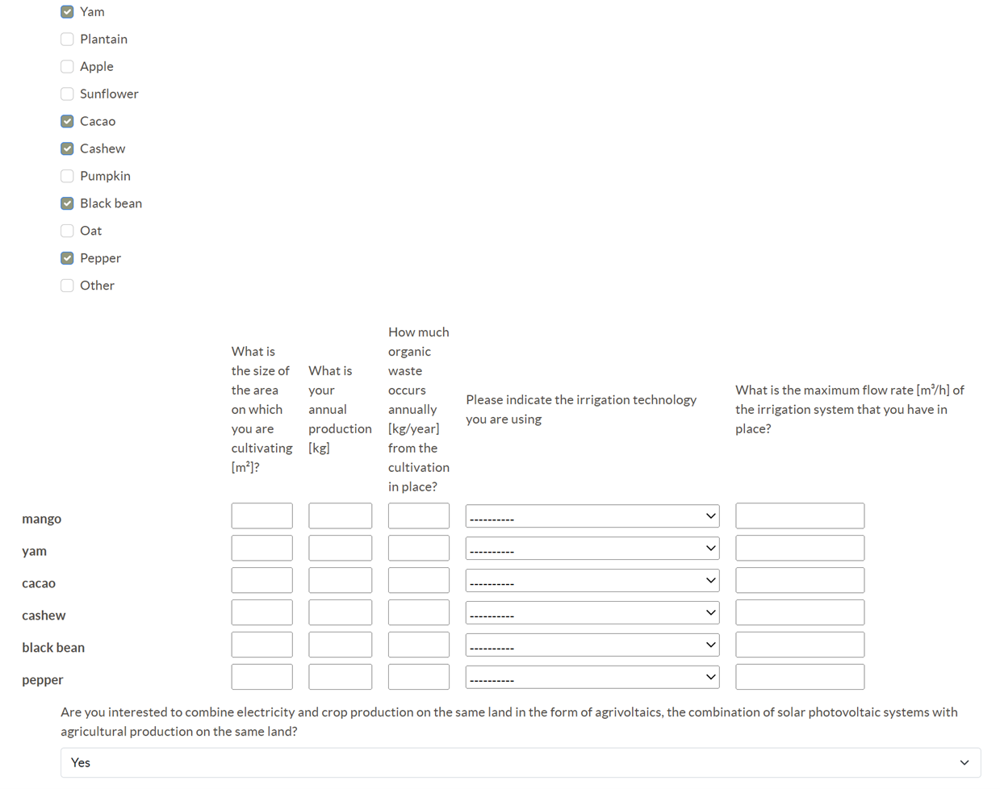

{% load static %}

<main>
    <div>
        <p>
            In the next step, the suitable system configuration, meaning the WEFE components including their connections,
            is defined by applying a survey-based design method.
            Therefore, a technical survey consisting of qualitative and quantitative questions about
            the energy, water, sanitation, and agriculture components in place is presented to the user.
            The screenshot shows the design survey in the WEFEPlan app depicting parts of the agricultural section,
            “Crops”. Based on the user’s answers, potentially suitable integrated WEFE components are selected
            from the WEFE Component Library and interconnected appropriately to generate a set of
            feasible integrated WEFE system layouts for subsequent optimization.
        </p>
        <p>
        
        </p>
    </div>
</main>
